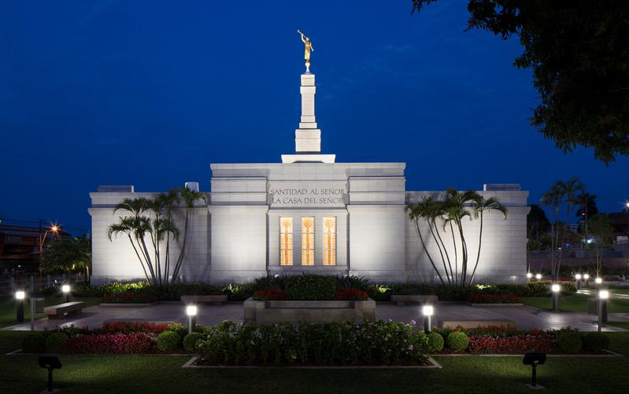

A nighttime shot of the Aba Nigeria Temple.Albuquerque New Mexico TempleExterior of the Arequipa Peru Temple

Exterior of the Asunción Paraguay TempleAtlanta Georgia Temple at night.Exterior of the Barranquilla Colombia TempleBelém Brazil TempleBern Switzerland TempleThe exterior of the newly-remodeled Boise Idaho Temple, 2012.